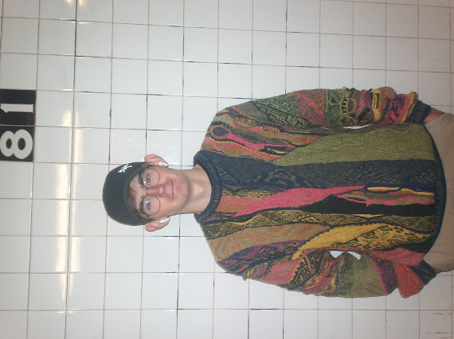
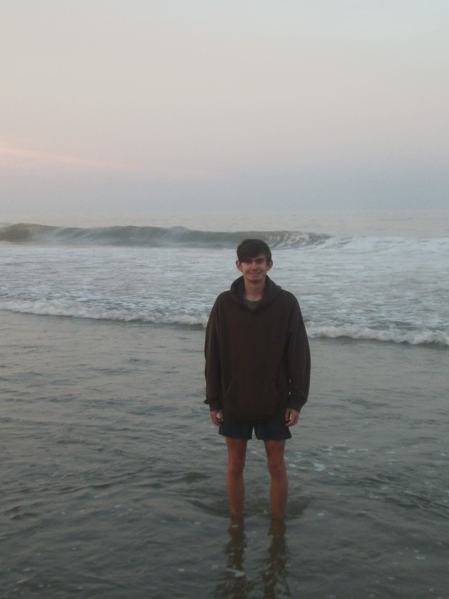
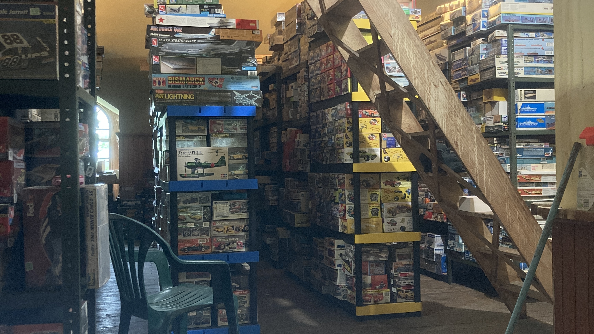
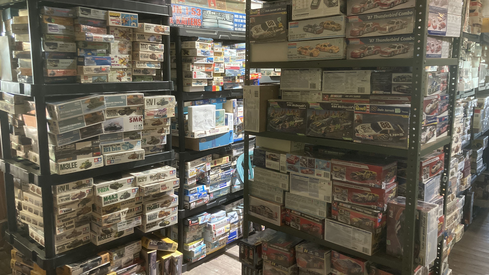
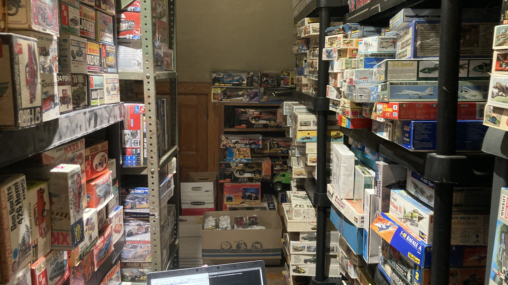
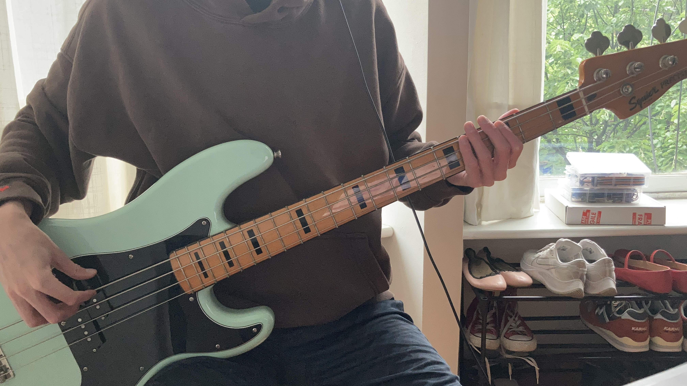
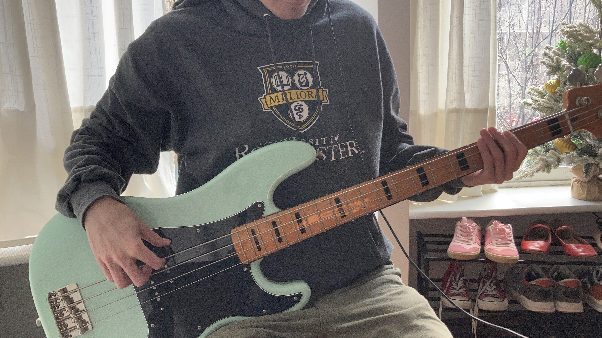

Connor Majewski
Hi, my name is Connor Majewski.
I'm a computer science graduate who likes solving problems and creating.
This site is a way for me to showcase some of my projects, personal work, and hobbies.
I hope you enjoy.
Hi, my name is Connor Majewski.
I'm a computer science graduate who likes solving problems and creating.
This site is a way for me to showcase some of my projects, personal work, and hobbies.
I hope you enjoy.


I recently built a desktop application to manage a collection of over 4,000 scale models. I spent a week at the location collecting data using a Python program I wrote, which uses the RealTimeSST↗ and OpenPyXL↗ libraries to send a basic transcription of model information to an Excel spreadsheet. After collecting the rudimentary data, I spent the next couple of weeks cleaning it, again using OpenPyXL to automatically clean and update the spreadsheet. To find the estimated value of each model, I originally wrote a program to scrape eBay, find the closest matches and average their cost, but ran into issues with similar items having wildly different names. Once all the data was cleaned, I used sqlite3 to convert the spreadsheet into a database file. I used customTkinter↗ to design a GUI frontend that allows a user to easily perform CRUD commands. Models can be searched, filtered, updated, added, and deleted, and results can be sent to an Excel file for future use. I then started working on connecting the program to eBay. I wrote a basic helper library that would allow me to make calls to eBay, using a mix of the RESTful and Trading APIs. When listing a model for sale inside the program, all that is needed is the dimensions, weight, and at least one image. Shipping costs are automatically calculated when creating the listing. The biggest bottleneck to this was having to upload images. I am calling eBay Picture Service when images are uploaded, which works, but is very slow.



I used the SDL2 library to create a basic shape inspector tool. I created some shapes, then added functions to handle display, rotation, and resizing. I then synced the rotation of shapes to mouse movement, so that moving the mouse up, down, left, and right rotates the shape in the same direction. The program can also plot arbitrary points from a given list of (x,y,z) coordinates.
I built a simple demo site where users can add and retrieve song links on YouTube through a site-wide playlist of sorts. I used the YouTube v3 API with Python for song searching, sqlite for storing and retrieving song links, and Django for overall website structure and content handling.
I built a personal website to show some of my technical skills, using my work as a way to highlight the languages, libraries, and frameworks I use in day-to-day stuff. I used HTML for the basic information, and CSS to make the site look a little better, and be more responsive (hopefully!).

In 2024 I started a YouTube channel to post bass covers and transcriptions, as a way to improve my playing and listening skills. Since then, I have uploaded close to 40 videos, with no plans on stopping. Since then, I have gained a small following, recently hitting 250 subscribers and 47,000 channel views respectively, with my most popular video currently sitting at 15,000 views.

